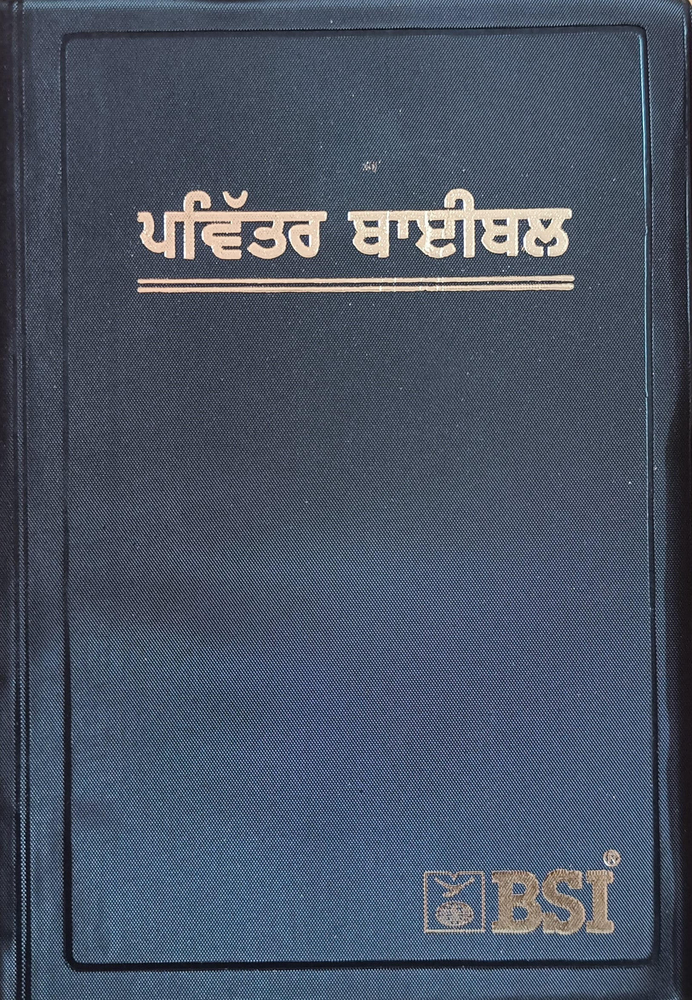

ਕਹਾਣੀ ਦਾ ਅੰਤ
ਭਾਵੇਂ ਅਸੀਂ ਯਿਸੂ ਦੇ ਚੇਲੇ ਹੋਣ ਦੇ ਨਾਤੇ ਜੋ ਵੀ ਅਜ਼ਮਾਇਸ਼ਾਂ ਦਾ ਸਾਮ੍ਹਣਾ ਕਰਦੇ ਹਾਂ, ਸਾਡੇ ਕੋਲ ਇਹ ਜਾਣਨ ਦਾ ਵੱਡਾ ਭਰੋਸਾ ਹੈ ਕਿ ਇਤਿਹਾਸ ਉੱਤੇ ਪਰਮੇਸ਼ੁਰ ਦਾ ਕੰਟਰੋਲ ਹੈ। ਉਹ ਕਹਾਣੀ ਦੇ ਅੰਤ ਨੂੰ ਜਾਣਦਾ ਹੈ, ਅਤੇ ਇਹ ਹਮੇਸ਼ਾ ਇੱਕ ਅਨੰਦ ਹੁੰਦਾ ਹੈ.
ਪਰਕਾਸ਼ ਦੀ ਪੋਥੀ
ਪਰਕਾਸ਼ ਦੀ ਪੋਥੀ ਯੂਹੰਨਾ ਰਸੂਲ ਨੂੰ ਦਿੱਤੇ ਗਏ ਦਰਸ਼ਣ ਦਾ ਰਿਕਾਰਡ ਹੈ ਜਦੋਂ ਉਹ ਪਟਮੋਸ ਦੇ ਯੂਨਾਨੀ ਟਾਪੂ ਉੱਤੇ ਗ਼ੁਲਾਮੀ ਵਿਚ ਰਹਿ ਰਿਹਾ ਸੀ। ਇਹ ਬਾਈਬਲ ਦੀ ਸਭ ਤੋਂ ਔਖੀ ਕਿਤਾਬ ਹੋ ਸਕਦੀ ਹੈ। ਪਰਕਾਸ਼ ਦੀ ਪੋਥੀ ਯਿਸੂ ਦੇ ਚੇਲਿਆਂ ਲਈ ਬਹੁਤ ਅਤਿਆਚਾਰ ਦੇ ਸਮੇਂ ਦੌਰਾਨ ਲਿਖੀ ਗਈ ਸੀ। ਬਹੁਤ ਸਾਰੇ ਵਿਦਵਾਨ ਮੰਨਦੇ ਹਨ ਕਿ ਜੌਨ ਨੇ ਸ਼ਾਇਦ ਇਸ ਨੂੰ ਇੱਕ ਕੋਡ ਵਿੱਚ ਲਿਖਿਆ ਹੋਵੇਗਾ ਜੋ ਉਸ ਦੇ ਜ਼ਮਾਨੇ ਦੇ ਪਾਠਕਾਂ ਦੁਆਰਾ ਚੰਗੀ ਤਰ੍ਹਾਂ ਸਮਝਿਆ ਹੋਵੇਗਾ।
ਹਾਲਾਂਕਿ ਪਰਕਾਸ਼ ਦੀ ਪੋਥੀ ਵਿੱਚ ਕੁਝ ਪ੍ਰਤੀਕਾਂ ਅਤੇ ਚਿੱਤਰਾਂ ਨੂੰ ਸਮਝਣਾ ਮੁਸ਼ਕਲ ਹੈ, ਤੁਹਾਨੂੰ ਘੱਟੋ ਘੱਟ ਇੱਕ ਵਾਰ ਇਸਨੂੰ ਪੜ੍ਹਨਾ ਚਾਹੀਦਾ ਹੈ। ਪਰਕਾਸ਼ ਦੀ ਪੋਥੀ 1 ਅਧਿਆਇ 3 ਉਨ੍ਹਾਂ ਨੂੰ ਬਰਕਤਾਂ ਦਾ ਵਾਅਦਾ ਕਰਦਾ ਹੈ ਜੋ ਇਸ ਨੂੰ ਪੜ੍ਹਦੇ ਹਨ। ਸੱਤ ਚਰਚਾਂ ਨੂੰ ਲਿਖੀਆਂ ਚਿੱਠੀਆਂ ਵਿੱਚ ਅਜੇ ਵੀ ਆਧੁਨਿਕ ਚਰਚ ਨੂੰ ਬਹੁਤ ਕੁਝ ਕਹਿਣਾ ਹੈ। ਅਤੇ, ਜੇਕਰ ਤੁਸੀਂ ਪੁਰਾਣੇ ਨੇਮ ਦੇ ਨਬੀਆਂ ਵਿੱਚੋਂ ਕਿਸੇ ਨੂੰ ਪੜ੍ਹਿਆ ਹੈ, ਤਾਂ ਤੁਹਾਨੂੰ ਲਿਖਣ ਦੀ ਸ਼ੈਲੀ ਅਤੇ ਚਿੱਤਰਾਂ ਅਤੇ ਚਿੰਨ੍ਹਾਂ ਦੀ ਵਰਤੋਂ ਵਿੱਚ ਬਹੁਤ ਦਿਲਚਸਪ ਸਮਾਨਤਾ ਮਿਲੇਗੀ।
ਜੇ ਅਸੀਂ ਪਰਕਾਸ਼ ਦੀ ਪੋਥੀ ਵਿੱਚ ਹੋਰ ਕੁਝ ਨਹੀਂ ਪੜ੍ਹਦੇ, ਤਾਂ ਸਾਨੂੰ ਘੱਟੋ-ਘੱਟ ਆਖਰੀ ਅਧਿਆਇ, ਅਧਿਆਇ 22 ਪੜ੍ਹਨਾ ਚਾਹੀਦਾ ਹੈ। ਇਸ ਵਿਚ, ਅਸੀਂ ਉਸ ਲਈ ਵੱਡੀ ਉਮੀਦ ਪਾ ਸਕਦੇ ਹਾਂ ਜੋ ਸਾਡੇ ਘਰ ਸਵਰਗ ਜਾਣ ਵੇਲੇ ਸਾਡੇ ਲਈ ਉਡੀਕ ਕਰ ਰਿਹਾ ਹੈ।